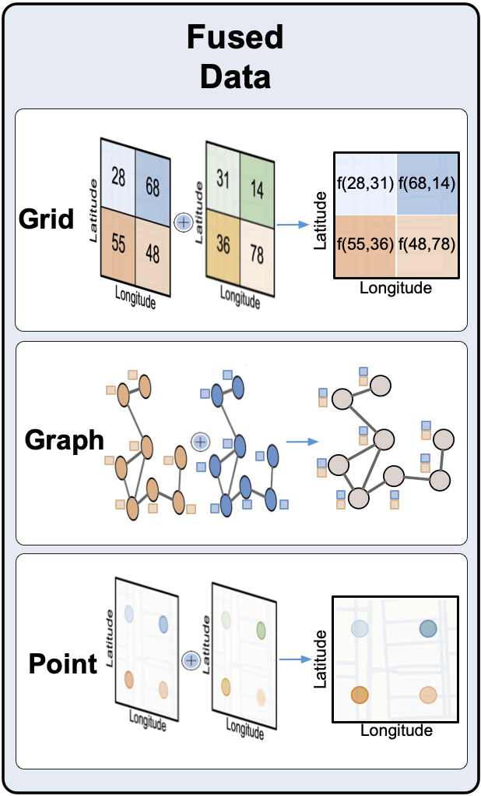

UDL Fusion
Overview
{kind=link}
API
grid_fusion(grid_layer_list, name=None, year=None, column_list=None, start_lat=None, end_lat=None, start_lon=None, end_lon=None, mode="concat")
Note
The mode “concat” is the only one that returns a numpy.array. The other modes return a GridLayer object. “concat” mode concatenates the features of the grid layers and stacks in feature dimensions.
grid_layer_list (list(GridLayer)) - List of grid layers to be fused
name (str) - Name of the new grid layer
year (int) - Year of the new grid layer
column_list (list(str)) - List of columns to be fused
start_lat (float) - Start latitude of the new grid layer
end_lat (float) - End latitude of the new grid layer
start_lon (float) - Start longitude of the new grid layer
end_lon (float) - End longitude of the new grid layer
mode (str) - Mode of fusion. “concat”, “sum”, “avg”, “max”, “min” or “random”. Defaults to “concat”.
“concat”
“avg”
“sum”
“max”
“min”
“random”
numpy.array if mode is “concat”. Otherwise returns a GridLayer object.
graph_fusion(graph_layer_list, name=None, year=None, column_list=None, start_lat=None, end_lat=None, start_lon=None, end_lon=None, mode="concat")
Note
The mode “concat” combine all node and edge features into one graph layer.
graph_layer_list (list(GraphLayer)) - List of graph layers to be fused
name (str) - Name of the new graph layer
year (int) - Year of the new graph layer
column_list (list(str)) - List of columns to be fused
start_lat (float) - Start latitude of the new graph layer
end_lat (float) - End latitude of the new graph layer
start_lon (float) - Start longitude of the new graph layer
end_lon (float) - End longitude of the new graph layer
mode (str) - Mode of fusion. “concat”, “sum”, “avg”, “max”, “min” or “random”. Defaults to “concat”.
“concat”
“avg”
“sum”
“max”
“min”
“random”
point_fusion(point_layer_list, name=None, year=None, column_list=None, start_lat=None, end_lat=None, start_lon=None, end_lon=None)
point_layer_list (list(PointLayer)) - List of point layers to be fused
name (str) - Name of the new point layer
year (int) - Year of the new point layer
column_list (list(str)) - List of columns to be fused
start_lat (float) - Start latitude of the new point layer
end_lat (float) - End latitude of the new point layer
start_lon (float) - Start longitude of the new point layer
end_lon (float) - End longitude of the new point layer
PointLayer object
grid_point_fusion(grid_layer_list, name=None, year=None, start_lat=None, end_lat=None, start_lon=None, end_lon=None, step_lat=None, step_lon=None, random_seed=21)
Note
This function is used to fuse grid layers into a point layer. For each GridLayer, there will be points randomly spreaded according to the density times the value of the corresponding grid cell.
grid_layer_list (list(GridLayer)) - List of grid layers to be fused
name (str) - Name of the new point layer
year (int) - Year of the new point layer
start_lat (float) - Start latitude of the fused grid layer
end_lat (float) - End latitude of the fused grid layer
start_lon (float) - Start longitude of the fused grid layer
end_lon (float) - End longitude of the fused grid layer
step_lat (float) - Step latitude of the fused grid layer
step_lon (float) - Step longitude of the fused grid layer
random_seed (int) - Random seed for the random selection of the points
PointLayer object